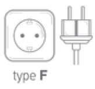
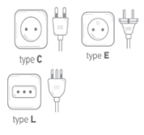
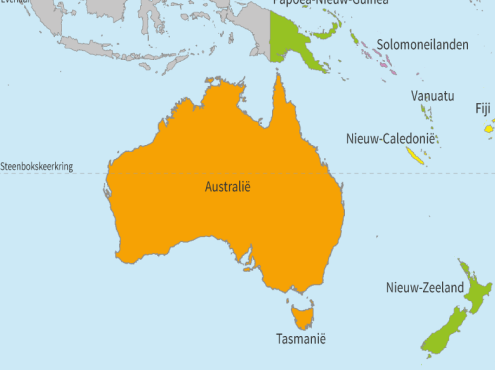

Azië
In Azië worden verschillende soorten stopcontacten en spanningen gebruikt, afhankelijk van het land. De meest voorkomende
stekkertypen zijn type C (met twee ronde pinnen, zoals in Europa), type A en B (zoals in Noord-Amerika), en type G
(met drie rechthoekige pinnen, zoals in het Verenigd Koninkrijk). In landen als China, Japan, en Thailand worden bijvoorbeeld
type A en B vaak gebruikt, terwijl in India en Singapore type G standaard is. De spanning varieert per land. In de meeste
Aziatische landen is de netspanning 220V tot 240V bij een frequentie van 50Hz of 60Hz, wat vergelijkbaar is met de Europese
standaard. In Japan daarentegen ligt de spanning op 100V, wat lager is dan in de meeste andere landen, en de frequentie
verschilt tussen 50Hz in het oosten en 60Hz in het westen van Japan.


Indie
In Indie worden de type D & M stopcontacten het meest gebruikt.

Indonesie
In Indonesie worden de type C & F stopcontacten het meest gebruikt.
Bali
In Bali worden de type C & F stopcontacten het meest gebruikt.

Mongolie
In Mongolie worden de type C & E stopcontacten het meest gebruikt.
Iran
In Iran worden de type C & F stopcontacten het meest gebruikt.

Saudi Arabie
In Saudi Arabie worden de type A, B, C & G stopcontacten het meest gebruikt.

Pakistan
In Pakistan worden de type C & D stopcontacten het meest gebruikt.

Turkije
In Turkije wordt het type F stopcontact het meest gebruikt.

Jemen
In Jemen worden de type A, B & G stopcontacten het meest gebruikt.

Syrië
In Syrië worden de type C, E & L stopcontacten het meest gebruikt.

Sri Lanka
In Sri Lanka wordt het type D & G stopcontact het meest gebruikt.
Afghanistan
In Afghanistan worden de type C & F stopcontacten het meest gebruikt.
Oceanië
In Oceanië worden voornamelijk twee soorten stopcontacten gebruikt, afhankelijk van het land. In Australië, Nieuw-Zeeland en
verschillende eilanden in de regio is type I het meest gangbare stekkertype. Dit type heeft drie platte pinnen, waarvan de
twee bovenste in een V-vorm staan. Sommige stopcontacten kunnen ook met alleen twee pinnen worden gebruikt.
De standaardspanning in Oceanië is meestal 230V, met een frequentie van 50Hz, vergelijkbaar met de Europese standaard.
Reizigers vanuit Europa hebben vaak alleen een stekkeradapter nodig, omdat de meeste Europese apparaten op dezelfde spanning
werken. Voor reizigers uit landen met een lagere spanning, zoals de Verenigde Staten, kan een spanningsomvormer nodig zijn om
te voorkomen dat apparaten beschadigd raken.


Australie
In Australie wordt het type I stopcontact het meest gebruikt.
Nieuw Zeeland
In Nieuw Zeeland wordt het type I stopcontact het meest gebruikt.
Nieuw Caledonie
In Nieuw Caledonie wordt het type F stopcontact het meest gebruikt.
Fiji
In Fiji wordt het type I stopcontact het meest gebruikt.